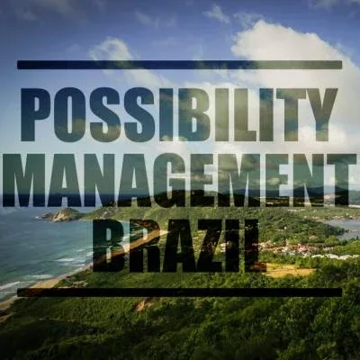
Jenny Tsang.
- Possibility Management in Brazil - Florianopolis- Rio de Janeiro- Sao Paulo
- Contact usSubscribe our Newsletter
- \ POSSIBILITY MANAGEMENT \ - A doorway to- more options- more possibilities- more lives- more choices- "WE CANNOT SOLVE OUR PROBLEMS WITH THE SAME THINKING WE USED WHEN WE CREATED THEM" - Albert Einstein - During more than 40 years of experimental research, - Clinton Callahan, originator of- Possibility Managementexplored and documented new ways of thinking, being, relating, creating, and serving. Those new ways are now been delivered in- Expand The Boxtrainings and- Possibility Labs, the two core trainings of the comprehensive work of Possibility Management.- These new ways of thinking - that we call - upgraded- bring a new light and therefore a new clarity to the problems we are faced with, whether they regard relationship, work, life purpose or the lack of.- thoughtmaps- They give you access to serving the world as a - Possibilitator- More than a thousand people have participated in an - Expand The Boxtraining around the world, in Germany, Spain, Portugal, Switzerland, the UK, Poland, Australia, New Zealand, the USA, ...- ... and soon BRAZIL, where - Expand The Boxis coming for the first time!
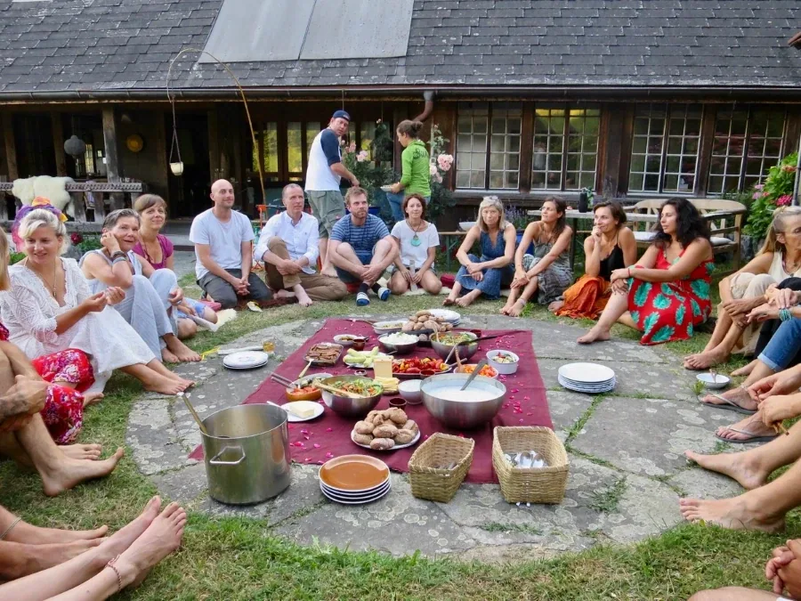
- CELEBRATORY DINNER AT A POSSIBILITY VILLAGE LAB IN SWITZERLAND - Some impression of participants about - Expand The Box.- Ramona, - Germany- "Thank you for 3 fulfilling days in which I could experience a growing inner order, centeredness and the expand of my self-made patterns of thinking. The trainer's loving and responsible way of spaceholding empowered me to embark on an inner journey in which I was allowed to clean up and discover treasures that are now being expressed. I am happy that there are more and more people who are 'different', just as I have felt different for a lifetime. It is time to play adult games and take responsibility because there are unlimited possibilities." - Vanda Pereira, - Portugal- "In my first Expand The Box I had a huge breakthrough in the most sacred and living space ever in my life. Transformation in my life, my passion, my work, and doing Expand The Box was like feeling home at the deepest level my heart had ever known. I had so much FUN growing up! And I made deep heart-connection friends as I had never experienced before in my life. I became more human. - Expand The Box opens doors for people to feel and live their dreams. This is magic for the heart." - GALLERY
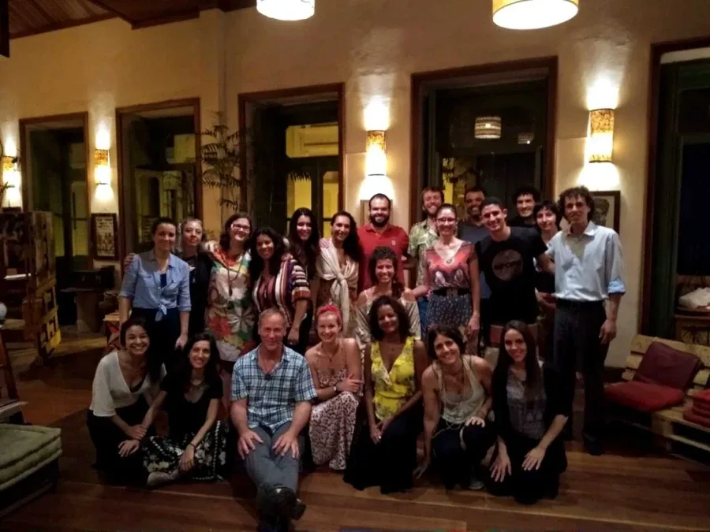
- Inner Resources in Connection - Rio de Janeiro, Brazil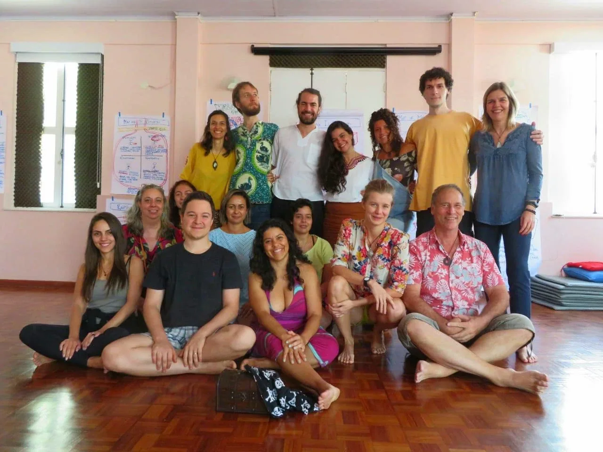
- Expand The Box - Rio de Janeiro, Brazil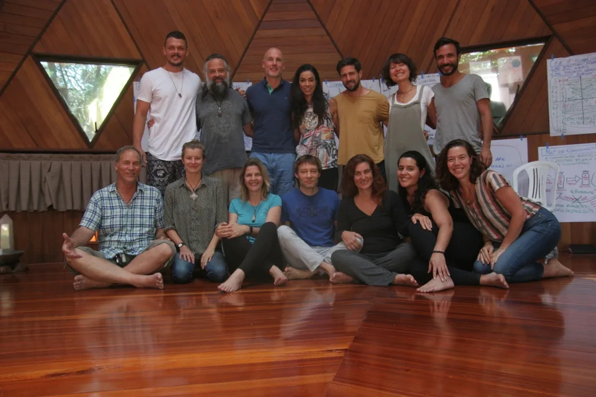
- Expand The Box - Florianopolis, Brazil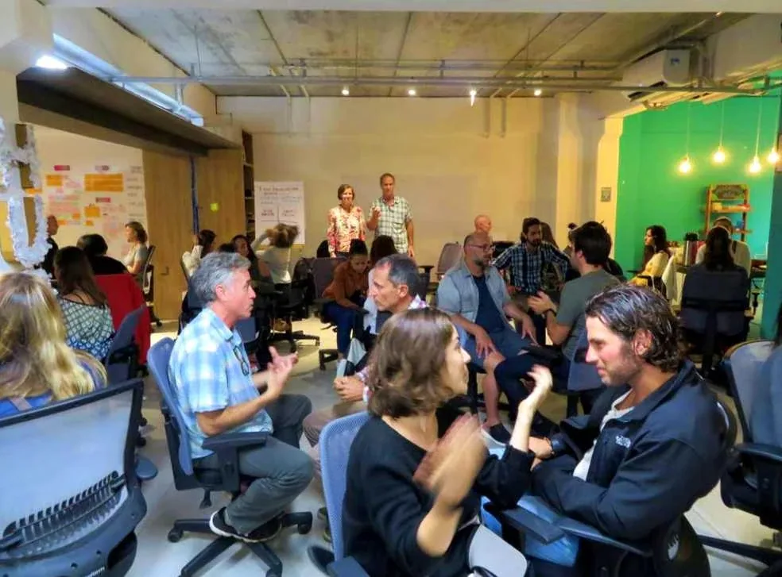
- Introduction to - Gameworld Building (archived — not captured)- Impact Hub, Florianopolis, Brazil - / EVENTS / - Expand the box RIO DE JANEIRO - 1-5 NOVEMBER 2019 - Expand The Box is one of the core trainings from Possibility Management. It is a safe yet transformational learning environment. - Expand The Box explores without already made answers the conditions that takes us away from our potential in our work, passion, relationships and creativity. - Find more information at: - Inner Resources for connexion - 19-21h, 11 NOVEMBER 2019 The success of your team depends on your ability to connect.How is your level your connection?- Registration: Hans Keeling, WA: +55 48 9626-9029
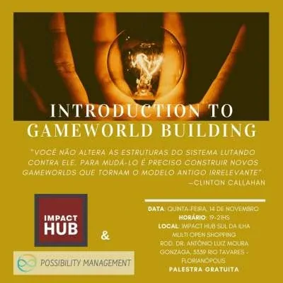
- INTRODUCTION TO GAMEWORLD BUILDING - 19-21h, 14 NOVEMBER 2019 - "You don't change things by fighting the existing gameworlds. You change things by building new gameworlds that make the existing gameworlds irrelevant." - Registration: Hans Keeling, WA: +55 48 9626-9029 - Expand the box FLORIANOPOLIS - 20-24 NOVEMBER 2019 - Expand The Box is one of the core trainings from Possibility Management. It is a safe yet transformational learning environment. - Expand The Box explores without already made answers the conditions that takes us away from our potential in our work, passion, relationships and creativity. - Find more information at: - \ TRAINERS & ORGANIZERS \ - AT YOUR SERVICE
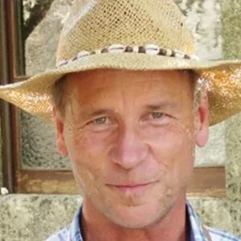
- CLINTON CALLAHAN - Originator of - Possibility Management, inventor of trainings- Expand the Box, author of- Radiant Joy Brilliant Love- Directing the Power of Conscious Feelings- Goodnight Feelings- Clinton is able to recognize and liberate potentials in people with high appreciation and judgment-free recognition. His enormous empathy makes his work deep, warm and authentic.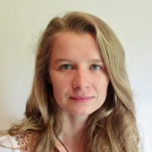
- ANNE-CHLOE DESTREMAU Before I met other trainers, I thought I was a very strange human being. I could see and do what others around me couldn't see or do. I think I numbed myself to those skills in order to 'fit in'... until I met other transformational agents who welcomed me as their peers. Now I see that I am simply an ordinary trainer taking a stand for the evolution of consciousness in the world, opening doorways for anyone who wants to step into next culture. Next culture is- archearchyand comes after the reign of matriarchy and patriarchy.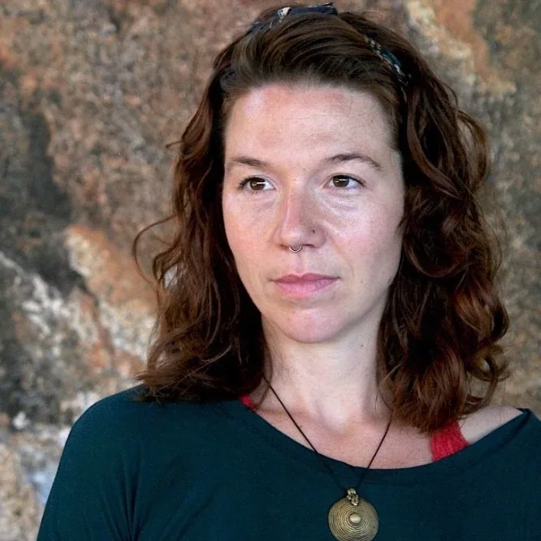
- VERA FRANCO - Love : Clarity : Possibility : Presence : Creation : Integrity- Born by the sea in Portugal and after living in the international Findhorn Ecovillage in the north of Scotland for 9 years, Vera is travelling the world activating Evolution and Transformation in places like Costa Rica, Brazil, Portugal. She finds true Aliveness walking in the unknown, with an open heart and a strong back. - Joana Ribeiro - Joana was born in Portugal but her soul is Brazilian. She lived in Rio de Janeiro in 2011, but decided to return to Lisbon that same year. Other reasons led her to return to her country, but her heart always throbbed in samba, bossa nova and batucada, other sounds than fado. For 8 years, Joana explored several philosophies, therapies and formations in Portugal. From Reiki, Rose Meditation, Theater, Yoga, Dance, to formations such as the Transition Interior and Recreation Course of Continuous Transition, Way of Council Formation, Women's Circle Keeper and THNK School Creative Leadership Program. Joan is passionate about transformational spaces, where her vulnerability inspires other human beings to listen deeply, to speak from the heart, without judgments and bringing to consciousness the feelings and emotions present.- Co-creator of the online - Jorney of the 4 Powers (archived — not captured).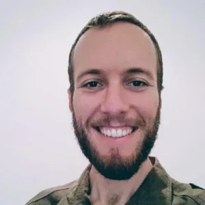
- MATHEUS OLIVEIRA - I do not know when this started, I just know that one day I woke up and knew I could change my world. I just did not know how. Since then this has been my fundamental question: how to create processes that can shape my world? In this quest I studied economics and transportation engineering (from the principles of financing the construction of sustainable cities), I founded Biklio (startup that encourages people to use the bike more). Today I am a professor at the Federal University of Rio de Janeiro and I dream of a Rio de Janeiro capable of supporting its residents to create solutions to their daily problems of mobility (which are not few). I believe that part of this process passes through the place that I occupy today in the city. I know that awareness of my responsibility in this space is fundamental to building this process. So here I am embracing this possibility of bringing the expand the box to Rio.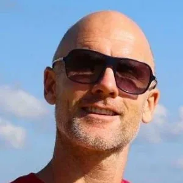
- HANS KEELING - Hans Keeling, born in America, moved to Brazil more than two decades ago. After working as a lawyer in Sao Paulo, Hans decided to stir his life in a different direction. - Hans is the manager of AVIVA Center in Florianpolis. - / CENTERS /
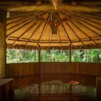
- AVIVA, FLORIANOPOLIS - In 2018, Hans and his partner, Thatiana have opened their AVIVA Center. AVIVA is located in the powerful island of Florianopolis. - In 2019, for the official opening of AVIVA, Hans imported 13 tonnes of crystal placed with the help of the local shaman. - AVIVA aims at bringing the diverse work dedicated to the evolution of consciousness together in one location.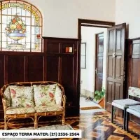
- Rio De Janeiro